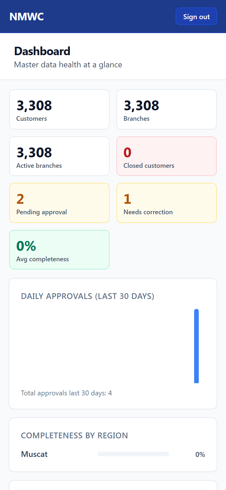
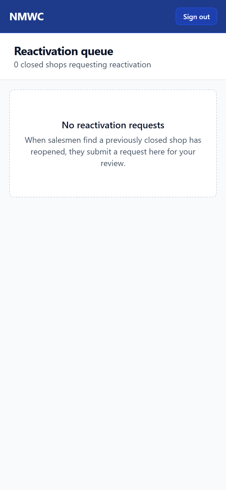
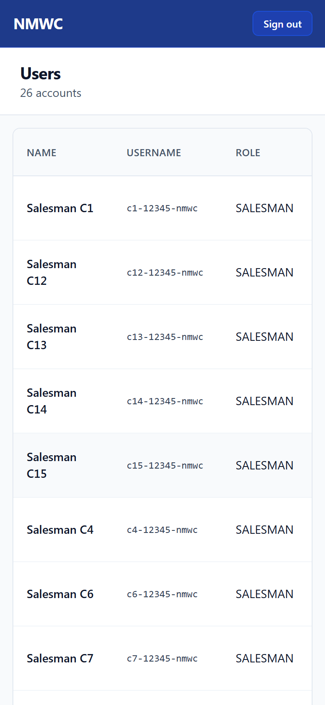

1. تسجيل الدخول
- افتح https://nmwc-cm.vercel.app.

- سجّل الدخول ببيانات اعتماد المدير.
أنت تملك السجل الرئيسي للعملاء في منطقتك. تعتمد القرارات الحساسة (إعادة تفعيل المحلات المغلقة)، تدير صلاحيات فريقك (كلمات المرور، تعيين الخطوط)، وتراقب جودة البيانات الإجمالية. هذا الدليل يغطي كل ما يخص دورك.

إعادة التفعيل تعيد المحلات المغلقة إلى السجل النشط. المديرون فقط يستطيعون اعتمادها.


استخدم هذا عندما يبدو شيء غير معتاد أو يسأل قسم الموارد البشرية عن من فعل ماذا.
| الموقف | ما العمل |
|---|---|
| "الصورة التُقطت قبل آخر تغيير حالة" | مندوب حاول استخدام صورة قديمة لإعادة التفعيل. ارفض — يحتاج صورة جديدة في المحل اليوم. |
| "فريقي لا يستطيع تسجيل الدخول" | تحقق من سجل التدقيق لإدخالات "فشل دخول". عادةً كلمة مرور خاطئة (النظام يقفل دقيقة بعد 5 محاولات خاطئة). |
| "لا يمكنك اعتماد طلبك" | أنت أرسلت الطلب أصلًا. أعد توجيهه إلى مدير زميل. |
| "لا توجد مناطق معينة لك" | حسابك لم يُعيَّن منطقة بعد. اتصل بالمكتب الرئيسي. |
| مندوب انتقل إلى خط آخر | استخدم صفحة المستخدمون → إعادة تعيين خط. العملاء الجدد ظاهرون فورًا. |
| مندوب ترك الشركة | علّمه كمعطّل في صفحة المستخدمون. سجل تدقيقه محفوظ. |
| ✓ تفعيل | إعادة محل مغلق إلى نشط. |
| إبقاء مغلق | رفض طلب إعادة تفعيل. |
| إعادة ضبط كلمة المرور | توليد كلمة مرور مؤقتة لعضو في الفريق. |
| تعطيل مستخدم | منع شخص ترك الشركة من تسجيل الدخول. |
| إعادة تعيين خط | نقل خط إلى مندوب آخر. |
| تجاوز إجباري | تحرير السجل مباشرةً. استخدمه باعتدال — يُسجَّل. |
| لوحة المعلومات | الفحص اليومي الصباحي. مجاميع المنطقة. |
| إعادة التفعيل | محلات مغلقة تطلب الفتح. |
| المستخدمون | فريقك. كلمات المرور، الحالة، ملكية الخط. |
| سجل التدقيق | كل عمل في منطقتك على الإطلاق. |
| الموافقات | قائمة موافقات المنطقة الكاملة (عرض التجاوز). |
NMWC نظام بيانات العملاء · دليل المدير · الإصدار 1.0 · 2026-05-10